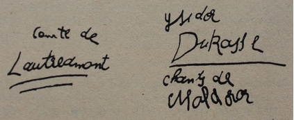

Benimle yatmalıydın, çoktan yatmalıydık, ilk tanıştığımızda o gece, Nil'de tanışmıştık hani/yatmak ne sağlardı, mutluluk mu?
Rasim’e baktım orada oturuyor masanın başında, duymuyor konuştuklarımı.
Dışarıya karışabilseydik, istiyor muyum gerçekten bunu? Yooo! Aralarına dönebilsem, yeniden başlayarak kendimizi değiştirmekten. Dün sabah baktım aynaya çırılçıplak, ilk katı vermiş göbeğim, geceleri bacaklarım şişiyor, gözkapaklarımda alkol memecikleri, başında ta başında, kafamıza vura vura bir eyleme soksalardı bizi, edindirselerdi öylesine değerler uğruna ölünesi. Rus - Amerika savaşı da başlamadı daha, başlayacağı da yok, Türk - Çin - Amerika savaşı ya da Afrika - Amerika savaşları. Sırtımızı döve döve, “Hadi,” deseler, “hadi savaşa deyyuslar, korkak, kaçaklar, kancıklar.” Çöktük gene buralara içmesek öleceğiz sanki, mızmızımız, bırbırbır, pinekleye pinekleye yıllardır içmekten... Yangınlar, kıyımlar içerisinde yeryüzü... burada beş dil bilen prenses eskisi, ozana sokulmuş, yayvan, cilvesi pörsümüş, ozan hiç dil bilmez, karşısında kaskatı oturmuş bir elçi, dış ülkelere gidecek yakında İngilizce, Almancayı, Fransızcayı konuşan diliyle emiyor piposunu ve beğenmez dudaklarını toplayarak, yana şöyle şöyle “vıy vıy” diyor prenses eskisine arada, söz attıkça ona Prenses, usansın ozanın hep pazarlık yapan içini taşıyan yüzü döşemelere de sıkı sarılsın sönük koluna diye... seviştiği günlerden bir anı. Alışkanlık bir.
Rasim'e baktım, orada.
Bir öyküm vardı hani, bulanık yeşil gözlü, dolgun vücutlu bir kadın, o sendin işte/ne yapayım peki? / dümencinin birisin sen, hem ilerici bir kadın diye çıkıyorsun ortaya, hem de kocandan başkasıyla yatmıyorsun, Namık’la yatmışsın ama bir vakitler…
Rasim’e baktım, dinlemiyor kimseyi ama orada, oturup içiyor.
Ne açlık kadına, tek başıma mı doyuracaktım onları, çarpık bedenimi tek başıma mı adayacaktım bu topluma. Hep birlikte olur bu iş, açılarak bir yatına kampanyası tüm yurdu kapsayan doğada Rus sınırından başlayarak, batıda Guatemala ve Honduras, güneyde Adana ve Halep kebaplarıyla besili olarak Amerikan hava kuvvetlerine dek, cennet ülkemin bebekleri anadan doğma ve erginleri ve kahilleri, cinsel algınlıkların, kıyımların ve tüm geriliklerin ününü atmak üzere hep birlikte bir, iki, üç, yatağa! Otuz milyon nüfustan eder yüz yirmi milyon bacaklı bir canavar... Elçi bu, bunlar böyle hiç gelmemiş denli gülerler, herkeslerin bir yanını bulursun gecenin sonunda konuşacak, bunların bulamamam, gelmemişlerdir sanki hiç açık vermeden, şu sarışın kadın da biraz elçi mi, salt Zeynel’e yöneliyor bakışları, konuşmaları da eşim. Burnu güzel sarışının. Zeynel'in içi çeker mi onu? Ozan, kolunu sardı Prenses’e, çıplak, dökük etleri Prenses'in, sayrılı bir sarısı var. St, Antanta Kilisesi'nde diktiğim mumlarca Namık’la birlikteydik... Etlerim diridir benim, çok beden eğitimi yapmışımdır ben okulda, amma da koştururlardı bizi, sanki yağı olduklarımız kovalardı ardımızdan, bir koşardım ben de çarpık bacaklarımla, kimseler yetişemezdi bana heh! Caponlar kovalıyordu sanki ardımdan, kısa ve tıkız bacakları terli ince gözleriyle binlercesi birden ve ben parktaki o adamı düşünürüm birisi koşarsa, babasının gemici ve hiç gelmeyen geceleri olduğunu ve annesinin hem baba hem anne, oysa kim bizim yağı olduklarımız yok, “yurtta barış cihanda barış” olarak ve koşarak geldik kurulduk bu masanın başına ne savaş ne dövüş iç bakalım, bize karşıdan ve soğuk gözlerle bir bakan mı var?
Rasim bakmıyor kimseye ama orada oturuyor, otursun
Çok, ayığım gene, olmaz, ne konuşmalı, kimi dinlemeli, söz bulantı verir oldu, yıllardır, sözcükler, sözcükler, Türkiye’de burcuva sınıfı yok, Prenses’in babası prensti, elçinin babası da elçiymiş gene, Prenses Elizabeth Beatles’lara ünvan vermiş, ne ulusçuluk, temelli masa başlarında kaldık, betiklerden fırlamış, eğreti, şöyle yalın bir söz, Çehov denli, nasıl anlatmalı arap atı denli, anam: “Kızlar koşmaz, kızlar etmez,” der dururdu, “örselenilmiş” nazik yerleri kızların koşunca, onun için birinci olurdum koşularda ben de gider, göstereceğim ben daha ona “örselenmeyi”, Elizabeth sarayında “ye ye” yapar mı kim bilir? Sonunda anamın istediği biçim bir kız oldum heh! evli barklı — evlilikle sınıf değiştirmiş, eşine pek bağlı, başkalarınla, yatmayan — yatmayan değil yatamayan — ayrı ev açmış, sokaklarda mutlu bir çift olarak, cıvıl da cıvıl konuşaraktan, kol kola yürüyerek, bayramlarda divandan bir kilo sütsüz çukulata alıp büyüklerinin elini öpmeye, yani “örselenir” diye düşünenlerin, geçmişinden iğrenmiş, şimdisinden tiksinen, salihatı nisvandan, başı ezilecek bir burcuva. Çocuklarımız ne olacak kim bilir orospu çocuğu herhalde.
metreslerim var benim / iyi ya yatsana onlarla / ben seni istiyorum / ne şeref benim için, şu senin getirdiğin öğrenci neden öyle yerlere devrilmiş yatıyor / Mustafa mı? beni bekliyor, hep böyle, ardımdan hiç ayrılmaz, “Türkiye'nin en büyük öykücüsüsün sen,” diyor, başıma bir iş falan gelir diye içerken, eleştirmecidir o hem de boksör...
Rasim’e baktım bir kahkaha attı ve baktı alıcı gözleriyle bir şahinin, ve sordu: “Saat kaç Semra?” “Yirmi dört,” dedim, “Daha var,” dedi.
St. Antonio Kilisesi’ne götürürdüm Namık’ı, ışın tutamlarının üşüştüğü mermer karenin ortasında çiçek açmış cenazeler olurdu sıcak daha, yakarılar, buhurdanlık, is, mum, gözyaşları, ilenmeler içerisinde iki Türk. Biri yirmilerinde, öteki ellisinde suratsız, oyarak biribirlerinin gözlerini İsa’ya dikmek için aldıkları mumlarla ve fısfısfıs ne bulurduk onca didişecek diye şimdi oysa. Hoş ben sevgililerimin çoğuyla orada buluşurdum. Mumların başındaki yatalak papaz tanır beni, beni her gördükçe ve günün birinde Katolik olacağımı sanan ipliğini gerer içinde, bense tanıdıklar göremez diye buralarda hep, sonra sonra çıkar olmuşumdur ortalara, çünkü Müslüman cemaatine her delikte rastlanır da, bir Kilisede! Hele kızının hafiyeliğine arasıra çıkan bir annemken. Rasim her yerde olur, Rasim’e rastlamamış insan yoktur içinizde, kimi vakit o da gelirdi bizimle birlikte eh! koca Rasim. İyi ve kötü günlerimin tanığı oturuyor şimdi de kendine durmadan sorarak başkalarını. Birlikte okumuştum Namık’a öykümü ilk kez, ilk kez görüyorca bakmıştı yüzüme gümüş suyunda ıslatılmış çatallı gözleriyle, “Biz kuralım artık kalemleri,” deyince de darmadağın olarak girişin mermerleri Kilisenin yanaklarına, gözlerimse bulanık yeşil hani Rasim’e doğru, sahi mi söylüyor? diye, çünkü bunu hiçbir vakit öğrenemeden ben, öldü Namık, ne işkence!
Ola ki açıkça bildirmemekteki öngüllüğü, bu sözü duyar duymaz çekip gideceğime olan korkusu... Rasiln’se cebinden kocaman mavi çizgili mendilini çıkarıp içine sümkürünce çürümüş çiçek sapları suda, kuyrukları çelenklerin katmanlaşmış, ısınmış alaca kokusu ışın tutamlarının, sönmek üzere mumlar üçümüz çıktık içmeye.
Zeynel Bach’ı bağırtmaya başladı, kendisi bağırırcana, ortalığa anıştırır varlığım, eşim, sarışınsa sokularak ona, Zeynel Bey Mahler var mı sizde, çok severim ben, siz de sever misiniz? / Sevmem, sevmez, kendisiyle ilgilenenleri de sevmez Zeynel, kendisine sırt çevirenleri, bel bağlamayanları, top atsan yıkılmazları sever o.
Kilisenin basamaklarına hep takılır ayaklarım, ya annem de ensemden geçirerek kılcal kollarını tam orada, çıkışa yakın yatırmışlardı İsa’yı cam tabutuna Pamuk Prensesi ya da dölcel, kanlar içinde bileklerine çakılmış da çıkarılmış çivilerin yerleri kanayarak süresiz, bir Fagin ne çok para yapardı o çivilerden, çiviler durmadan acıyorlardır çıkarılmış yerlerinden kanıyorlardır, öpen madamlardır ve mösyöler titrek, cinsel aşamaya ulaşmış acımalarıyla. İşte bir burç simgesi. Daha da dişil bir ikinci İsa, ötede ayağa kaldırılmış cam tabutunun içinde gene, pembe kuyruklu giysisinin eteğinden sağ ayağının yarısı görünüyor kirli değil ayak tırnakları, gelinlik denli kuşamı, Namık ona, “Gelinim ol İsa, gelinim ol İsa!” der miydi içinden ve bana duyurmadan — iki İsa'nın arasında mumları yakmadan sunduğumuz kum tepsisi ve biz. Biz her geliş orada dururduk en kuytu içimizle ve Namık İsa’ya bakıp bakıp ıslak ağzının soğuğunu bıçaklayarak kulağıma, “Hadi yürü, gidelim bize, yatalım sevgilim ne olur," diye çekerek İsa’nın arkasına saçlarımdan öpmeye beni bense artık dayanamam bu küçültmeye...
İlk görüşümde istemiştim seni, şimdi olur desen kaçarım ola ki / kaç yaşındasın sen / otuz / ben otuz dört...
Şu karıntıya uymayan tek erkek sizsiniz burada Zeynel Bey, müziğinizle bambaşkasınız... dokuzuncu senfoni?
Zeynel bana baktı duydum mu diye Sarışını, sonra uzaklaştı, kıskandırmak bir düşküdür onun için, istese de yapamam Ressam Arif masadan kaldırıp başını yarım gözleriyle sarışına çekip içini yürüyerek, ama Nermin de ardından, eşi, denizlerin merdiven altlarından çıkmış örümcek olarak bir.
bende Beethoven var ince ve sarışın ve güzel bayan bende var gel, dans edelim önce / al sana dans Beethoven'le ha! al sana al, al, karın yanında dururken hem de / ah yapmayın durun durun ben zaten dans bilmem / bilirsin güzelim aldırma, sen korkma benim cadı karımdan / aaa! gözümün önünde, görüyorsunuz ya tanığım olun, Semra sen, Mustafa, Rasim, Prenses Hanım tanığımsınız / ürkek güvercinim benim korkma sen, çekil karşımdan iğrenç karı, yolumdan çekil, eğleneceğim ben / eğlenemezsin gözlerimin önünde, burası benim arkadaşımın evi, benim saydır Semra'yı ben tanıştırmıştım sana, onun için şimdi defol git, kov şunu Semra! burası benim sayılmaz mı? / domuz herif al sana / bana el kaldırdın ha, resmimin, boyalarımın güvesi, yaratıcılığımın sömürücüsü, kıskanç, kıskanç da değil sahici tek duygusu kalmamış karı, numara, numara... / bodur, beberuhi ben kadınım gene de boyum bir yetmiş, sen altmış beşsin, ayrılıcam, ayrılıcam yarın hemen, kocam değilsin artık, değilsin Semra kov diyorum şunu evinden / aman boş verin yahu oturun ikiniz de / ah benim yüzümden oldu ben gidiyorum Zeynel Bey, arada bir de yavrulan var değil mi olmasa hadi neyse, böyle olsun istemezdim Zeynel Bey... / güle güle, güle güle / hadi sen de git onunla, kov şunu Semra, kov şunu gitsin / kes sesini be ben eğlenmek coşmak için yaratılmışım, dans edeceğim, coşkunun resmini boyayacağım, dünya resmi önünde sizlerin ne öneminiz var, yüz erkek yaşamış şimdi de beni yaşamak istiyor, tüketemeyeceksin beni, zindancı karı anlıyor musun, senin numaraların sökmez bana, içmemi istemeyerek içmemi hazırlayan, çünkü biliyorsun içerek sana katlandığımı, pasaklı, hadi şimdi gidiyorum ama gelme ardımdan, intihar etmeye kalkma, ayaklanma kapanma, tanrı aşkına tutun şu zindancıyı biraz sonra gelip yakaracak bana biliyorum, tutun şunu da kurtarayım yakamı elinden ne olur, acımamı, acımamı sömürmesin...
Rasim’e baktım.
AHHH! gitti gitti sahiden de gitti, sahiden de gitti, şimdi ben ne olacağım, ne yapacağım, o şimdi içer, onu kandırırlar, ben nasıl kandırmıştım öyle, yufkası boldur yüreğinin, ona gitmeliyim, biriniz götürün ona beni, ne olur, götürün? sen ülkemin şen ozanı, sen götürürsen ayaklarını öperim, karına söylemem yaptıklarını, ya da siz Bay Elçi...
Elçiye baktım, kasıkotu bağlamışça oturuyor koltuğunda, kimseye ve eşyalara değmeden heh!
Bakınız Bay Elçi elinize kaldım ona gidemezsem şimdi, hemen boşar beni, o vakit başınıza kalırım, o boşarsa beni siz alırsınız çünkü, alır mısınız? alırsanız oturalım, burası sıcak ve içki de var ikimiz de yalnız sayılırız, size kendimi anlatayım: Güneyin şirin bir beldesinde doğdum, türlü yağlarla ovuldum, çocukluğumun üşütücü çürükleri yüzünden şiir yazarım, alırım kalemi elime kara, kara oturaklara da otururum, dayarım şakağıma kara tabancayı — yazamazsam kendimi öldüreceğim diye korkudan yazarım — bir elimde Dostoyevski, bir elimde Kafka, bir elimde Kutsal Betik, bir elimde Rüke, gene de Dostoyevski'den çıkmışımdır ben, o olmasa bu numaralan bilemeyecektim, karışığımdır ben çapraz ve bükülür aman Zeynel ne diye koyuyorsun Beethoven'i, kıskanç! kimseyi kandırmamı istemezsin, yapayalnız acılar içinde mi gebereyim? / yeter artık bıktık bu numaralarından Nermin bir yeni insan görmeyesin / siz onun dediklerine bakmayın âşıktır bana biraz, siz beni Arifime ulaştırın ayaklarınızı öpeyim, yok yok kaçmayın iğrenmem ben sizden, iğrenç benim bakın tırnaklarımın arası yumurta sarısı, ekmek kırıntısı ve saç kepeği doludur iğrenir miyim? ama belim ince apışlarım setlidir...
Abdullah Hoca Namık’ın en sevmediği adamdır...
Bir sıra cam tabutun önünde, çökerdi dizlerini gelen geçenler, Namık'ın elinden kurtulup diz çöktüm oraya ben de, o da yanıma, okudum: “Ya Hazreti İsa bize karşı senin şiddetli muhabbetin sebebiyle, canımızın selameti ve halâsı için haçlanmak ve gayet zi-kıymet kanım dökmek istedim…”
XII Pie
15 Birincikanun
1940
“Böyle olma kalkar giderim — dışarıda Rasim’e rastlarım — burada öpüyorsun beni ve bunu salt garip olsun, çarpıcı olsun diye yapıyorsun, içinden İsa’yı çağırdığım duydum...” “Allah kahretsin seni, seni sevdiğimi bile doya doya söyletmedin bana...”
bilseniz nasıl size uygunum, terlik tahta tabut, tırmık hiç yüksünmem dayakla büyüdüm ben, derim sabırlı, gönlüm kavi arka üstü — yere arka üstü uzanır — yüzüstü — yüzüstü döner — ve akşamüstü — kalkar — ne vakit olursa, tam ve yarım dönmelerle, dikine kalkmalar ve karşımdakine ağırlık vermeksizin bozmadan sistemini sinirin, kalp yollarına dokunmadan ve böbrek, tutar ellerimle üfleyerek tam anında kılcal damarlarınıza seslenirim / sus ulan Nermin seni mi dinleyeceğiz, Semra dinliyor musun beni ben Paris'teyken bir gün...
“Ulan,” dedi Namık, orada son kez olacaktı bu artık kilisede biz, “ulan benimle gezip tozmaya varsın, içip eğlenmeye varsın, eşek denli öykülerini de okuttun bir yatmaya mı yoksun be?” Diz çöktüğümüz sıraya indirdiği bir tekme, yatmak için değil de şaşırtmak içindi sanki beni. Eşek. Dedi, “Ben de arkadaşlığa yokum hadi bakalım! Ne yani biz erkek değil miyiz be? Ya yatarsın benimle ya da ben gidiyorum, ne dedin İsa’ya mı seslenmişim, erkekten mi hoşlanmışım hep, diyelim öyleydi, ama artık değil, artık senden hoşlanıyorum... Ne! Ne! deneme mi yapacağım seninle, kendimi kurtarmak için seninle bir deneme ha!... Eşşoğlueşek! ya peki dersin ya da çıkıp gidiyorum?” “Sen kal ben çıkıyorum.” “Hayır efendim sen beni bırakamazsın ben seni bırakırım, ben çıkacam önce, kıpırda da bak, hem ulan ne diye beni ikide birde bu dürzü İsa'nın evine getiriyorsun be, al bu İsa’nı da kiliseni de k..,.. sok!” Fırladım önünden, yalımlamış mermerleri toz eden adımlarımla çıkışa, “öf be tiksinç moruk!” diyerek, bu moruğun onu yıkacağını biliyordum. Bana yetişmek için seyirtti bir an ama yetişemedi, kendi kendine kararmaya koyulmuş boş avlunun ortasında kunduralarım hep aynı taşa vura vura, “Göstericem, göstericem ben sana da, bu İsa’na da, annene annene söyleyeceğim seni!” diye tepinerek taşlarda bağırıyordu, koşarak geçerken Elhamra Pasajı’na ben.
İşte artık Namık'sız da kaldın üç beş söz çocukça, oyunlu, kaçak, dostluğa yakın bir gidişin orta yerinde yarım, Beyoğlu’na doğru yürür o şimdi, gözlerinin çürük mavisi sulanmıştır bensiz kalınca orada sulansın, ellilerinde, geçimsiz işsiz, kadın sevmekte geç kalmış, erkeklerden iğrenmiş — bir gün, o Rum oğlanla kol kola görmüştüm onu Taksimde. “Ne yapayım bir çeşit vicdan borcu; onu gezdiriyor yediriyorum, bakıyorum ona, ufacıktı elime geldiğinde,” demişti. iki yandan da umutsuz bir moruk olarak ağlıyor mudur İstiklal Caddesi’nin ortasında şimdi, ağlasın, kaptırmayacağım kendimi acıma duygusuna. Ne yapabileceğimi düşündüm oralarda öyle bir liramla, sinemaya geç kalmış bir madam kocaman ve kapkara çantasının azgın ağzına sokarak ellerini korkmadan bir nenler aranıyordu harıl harıl — Para. — İçmeli.
biliyorum sizin olmak kolay değil, şarkı söyler dansımı ederim, — harmanı dalın efeeem gee e eli iiyor — o gideceğimiz dış illerde hoşlanmadığımın başına çorap örerim, kendimi ve şiirlerimi ne yapar ne eder kabul ettiririm, kabul etmeyeni pişman ederim, olmazsa yakalarına sümük sürerim, halına kusar kustuğumu yediririm, atın olur kırbaçlar, köpeğin olur ulurum, kendine ot, atına et veririm, götür beni Arif’ime...
Çinliler haklı, ödün vermemek gerek ve almak göze ölümü, çizmeleri giyerek Atatürk denli, giden gider kalan sağlar bizimdir diye bir türküyle birlikte batkın, “Çizmem yok aklım var,” dermiş beriki...
Ozana baktım uyuyor sağ omzu üzerinde kapalı başınla, Prenses’in sağ omzunun. Uyku.
doğdum doğalı — ah ki doğmaz ki olaydım — güneş ışığı düşürmemişimdir yatağıma, çişimin çıkış sesini duyurmamışımdır kimseye, öylesine soylu Türk geleneklerine, ilk gece erkeklerimin koynuna donuma delik açarak girer çünkü bilirim ki ben bu küflü yaşama duvarları önünde kimsenin Arif’ten başka içi çekmeden çürümeye yüz tutmuş bir kadınım.
yüksek minareden attım kendimi kendimi/çok aradım bulamadım dengimi/yar yar konyalım yürü...
Kim var içinizde hangi kadın bir erkeğin içince çekilmeden katlanan yaşamaya, sen Semra, ya siz Prenses? İşte çürütülmeye uğratılmış tabiat parçalarım — açıp baldırlarını gösterir — morarmış, o tabiat ki esirgemeyen hainliğini benden, benden önce var idi ve benden sonra da var olacak işte buna da ben katlanamıyorum, ona emeğim geçmeli ve onun malı olmalıyım ve değilim hiçbir nesnesine sahip bir Arif’ine bir Arif’ine bu yüzden çaresiz yaşayan bir bağrıyanık olarak kapanıp ayaklarınıza birlikte bununla vicdan sizlere ait olarak bekliyorum kararınızı baylar...

Anneme söyler mi beni Namık? Telefonu biliyor, yapar mı bunu, Ayten'e mi gideyim, eve mi? Orada, o sıraya diz çöktüğünde yağmurluğunun etekleri savrulgan bir tilki denli sürünüyorken yerlere... XII Pie, 15 birincikânın 1940 Hazreti İsa'nın haç üzerine ruhunu teslim ettiği zaman aziz cuma günü saat 3'te bu duayı söyleyene 500 günlük kısmet gufran (indulgence) Defterimde el yazısı “sen bu adamı oku”:
babamınkini andırıyor, titrek öfkelendi mi daha çok titrek, şimdi de titriyordur zangır zangır. Ben terk ettim onu! Titresin. Bütün polisler sadisttir bütün komünistler mazohist...
günün birinde sen de isteyeceksin beni Semra!... işte birkaç gece üst üste aynı kahvede karşılaştık. Kimseyle konuşmuyordu, tek başına içiyordu konyağını, bir tanıdığı, selâmlaştığı yoktu, kimseyi görmüyordu sanki, bana bakıyordu sadece, sonunda yanına gittim, “benimle gelir misiniz,” diye sordum, kalktı konuşmadan çıktık birlikte otelime gittik, soyunurken giysilerinin çıkardığı sesi işitiyordum, gömleğini, atletini, bir erkekle üçüncü olacaktı, çoraplarını çıkarmasını bekleyemedim, sert bir gövdesi vardı, kadınsı değildi, ben onu daha yumuşak sanıyordum, “seni görür görmez sevdim,” falan diye birkaç söz geçti aramızda, o ilkinden sonra uyumaya başladı, bense sabaha dek hiç durmadım artık... ben...
Göstericem ben ona, bir kitapçıya girdim, bir sergiye uğradım eve gitmedim, annem “gene o koca komünistleydin gösterecek o sana hanyayı konyayı,” dedi, “eceli gelen köpek,” dedi “baban gelsin de, hep o şırfıntı yüzünden, o çıkartıyor seni baştan,” dedi...
uyandığımda akşam oluyordu, masanın üzerinde bir kâğıt, “İşte hepsi bu teşekkür ederim,” yazmıştı, imza yoktu. Günlerce aynı kahveye gittim sordum, bekledim gelmedi, yoktu / başka bir yere dadanmıştır / yooo öyle birisi değildi o, para bile almadıydı benden / ne diye ilk çağırmanda seninle gelsin? / ben olduğum için, beni istediği için, ilk kez benimle yattığına eminim, sevişmemiş erkeği ayırt ederim ben, ben...
ona bir baktım, çelimsiz ufarak bir oğlandı bakınca, elimle okşadım saçlarını, oğlum denli koltuklarından yakalayıp o “istemem! istemem!” diye çırpınırken kucağıma oturtup zorla kıçına kıçına şöyleşine tiksintiyle itti elimi:
beni sevdi o, görür görmez, bir gün sen yakaracaksın bana, istemeyeceğim ben seni...
bir liram kaldı, Ayten’e gitsem, onun o arkadaşları, dört dörtlük, nereden çıktıkları belli olmayan, ille de dansa yemeğe götüreceklerdir bizi, dökerek dil koca gece sabırla hiç olmazsa öpebilmeyi kurarak, biz de ince alaylarımız, ustalıklı iğnelemelerimizle ne denli kınamsık iki kız olduğumuzun tadım çıkarır, körkütük sarhoş, bir yerlerinde sinsi gecenin, artık bizi kullanmayı kurmuşları kullanabilmenin sevinciyle sıçanlaşıp gireriz bir taksiye ve Ayten’in daracık yatağına düşeriz, kıçır kıçır, kıçır, gülmekten iki kız yirmilerinde...
Strati’yi birlikte okumuştuk ya, öyle gecelerden birindeydi neden olduğunu bilmediğim bir ağlama tutturdu, ellerimi öpüyor durmadan, beni bırakma, beni bırakma ne olur bir tek sen varsın, sen varsın / ağlama ne oldu sana gel yat, gülüyordun ya şimdi / seninle o hayvanları ne güzel atlattık, sen olunca o hayvanları, sakın gitme / gitmem, uyu hadi! uyu uyu! / konuşmak istiyorum onları bilsen; anlatmalıyım sana, bilsen onların tümünle bilsen. / sonra yarın sabah anlatırsın, ağlama sarhoşsun, hadi uyuyalım / ellerini ver sen olmasan dayanamam. Uyu, uyku, uyku, uyku, uykunun içinde sevildiğimi duydum, okşandığımı öpüldüğümü... daha sonra kusmuştum. O, baygınlıklı bir uykunun içinde kuyruğu boynuna dolanmış, düşsel bir yaratığı andırırken kaçtım. şimdi ona gitsem, sevinir, severim onu, nasıl iğreniyorum ondan...
hanginiz yansı çoktan çürütülmüş şu ince bedeni Arif’e, kaçırmadan, tozlu tırabzanlann merdivenlerinde, iskelelerinde ve soğuk vapur, ve saklı çarşaflarında garsoniyerlerin atmaya ve beni, canı çekiyor. Öyleyse kalıyorum? sen mi, sen mi, sen? / ben götürürüm sizi / ben de / ben de / ben sizi isterim bay elçi, sizinle gitmek onun gözünde büyültür beni...
Çıktılar, elçi ve Nermin. Zeynel Beethoven’in sesini bir iyice yükseltti, yerdeki gövdesini Mustafa bir kıçından ötekine aktardı, öykücü, “Semra beni dinlemiyorsun,” dedi, bir bardak votka doldurdu, “Bana da doldur,” dedim ben de, içtik, Zeynel, “İç bakalım yarın gene şişersin,” dedi, ozan Prenses’in kucağından büyümüş gözlerini çekerek, “Oh be! Gitti mi onlar?” dedi...
Rasim’e baktım, o da bana baktı sonra okumaya başladı:
Akrep gibisin kardeşim
korkak bir karanlık içindesin
akrep gibisin
Semra pencereye gitti. Kar durmuş, her nenler olup geçiyor, olup geçiyor, sabah yaklaştı, ayılmak yeniden bakmak gerekecek güne, gün yeniden yaşanmak isteyecek. Bu insanlarla ne işim var benim, sever miyim onları, neden hep kendim suçlu sananların arasında oldum, kötülerin? İyiler var mı? Neden kötü bir düzenin suçunu kendimin yapmaya uğraştım, neden? Kendine kıyan bir başkaldırma. Kendini kötüleyen, başkaldırdığım nenlerin yerine yenilerini koyabilmeliydim, bir değer yeniden başlanası “dünyanın tüm yazarları birleşin” denli, her çeşit başlamak için çok geç, yıldım mı? Yalnızlık, ne cesaret! Bile bile, köksüz, şimdisiz, kimselerle buluşmayı kabul etmeden; intihardan başka ne kalır avunmak istemeyene?
ve bir tarla sıçanı gibi yaşayıp
ve bir tarla sıçanı kadar korkak olan
fırlayıp atılınca ileri...
babam kemiklerimi kırmıştı Nevzat’la konuşuyorum diye, Namık’la neden yatmamıştım; — orası eriyip gitmiştir bile toprakta beni bilmeden — parkta bir adam yağmurluğunun önünü açıverip göstermişti ilk kez, gözsüz burunsuz, mosmor bir tulumcuk, karanlık boğuğu ağzından salyaları asılıyordu, çığlıklar kopardı gepgergin bacakları bana, annem yetiştiğinde sıvışıvermişti, geceleri binlerce geceleri, o adamdan binlerce, parkta, sımsıkı duvarında ağaçların, sıkıştırarak beni, ama ben en hızlı koşmamla kurtulurken, onlar takıp kırmızı ve kara çizgili kanatlarını, tüm sonbalar yaprakları olarak; hooop! hooop! hooooop! orama, burama, orama, burama, bense anne! anne! anneee!... dilim dişlerimi yaramadan çıkıp dışarı, sesim ses olamadan, yıllar sonra Ayten’le giderken liseye, geçerken o parkın önünden, o adamdan çıkınca önümüze, “Hadi ordan pis hayvan!” gülüp geçiliyor...
Rasim'e baktım:
Kıyamet günü kıyamet günü
bir suali var Arzaile
oofreunde, nicht diese töne
hapishane kaleminde mukayyit kulunuzun saat kaç
/ 002 /
bir tek daha içelim ağlamaktan. M...
birdenbire bir geyikçe kısrak sıçrayıp, kavradı Mustafa’yı Rasim;
koca gece, koca gece dinlemeden plakları, içmeden, konuşmadan, ve işte en tehlikelisi ki en büyük ozanımızı okurken ben, onun kanla yazdıklarını okurken dinlemeden o büyük şiirleri yatamazsın, ben sizden değilim mi demek istiyorsun, öyleyse dışarı çık, işin ne bu evde çık ve dövüşelim erkekçe, çünkü bizler erkek adamlarız dövüşürüz gerekirse ve her dövüş bir derstir ilkesine göre yaşarız, Mustafa yanılıyor muyum yoksa, ben neler terk ettim...
Kapı çalındı, Nermin ve Arif geldiler. Tırmık içinde yüzü gözü Arif’in koluna yüklemiş bedenini Nermin’in, “Peki güzelim, peki karıcığım,” diyor durmadan. Doğru yatak odama yürüdüler, kilitlediler kapımı içeriden. Yastık kılıflarımı yeni değiştirmiştim, yorganım sarı kadifeden, bembeyaz çarşaflarım sümük içinde, kanlı sulu sarımtrak lekeler içinde kalacak, odamın altı üstüne gelecek sevişmelerinden, yarın tümünü de paklatmam gerekecek, yarınsa geldi bile!
Kar, gene yağıyor, bembeyaz bir aydınlık doldurdu sokağa, beynimin saçaklarına asılı beyaz bulutlar, ağır ağır çözülmeye başlayan katı, kaskatıdır, beyin, yüzyılların biriktiği katılık ağır ağır ve gittikçe ısınan yatağım aşındırarak çözülüyor geceye, sobanın gazı bitmek üzere, gece bitti bitiyor, ben tam ayrılırken, annem “Buldun o koca komünisti, sırtlanlar yuvası orası okul değil,” derdi, Elçi nasıl kurtulmuştur Nermin’in elinden, ne ödünler vererek kim bilir, Prenses bir burjuva mıdır, radyolar neden hep insanlara ezgiler söyler, çok mu düşünüyor radyolar insanları! “Al kiliseni de İsa’nı da k... sok” neden elbirliğiyle annemi haklı çıkarıyorlar, kırmızı kemanıyla bir kambur çocukluğumun içinde “yüksek minareden attım kendimi kendimi...” giden sarışının burnu güzeldi çok, Zeynel içinden geçirdi mi onu kim bilir Abdullah hoca gözümün içine bakardı fakültede, sanki saygısı vardı bana neden? Göstereceğim ben Namık’a, onun en sevmediği adamdır hoca, kimi adam herkese saygılı olur...
Bir, telefona koştum, on dakika sonra muhallebiciye girdi Abdullah hoca, seke seke masaların arasından sırıtıp, loğusa bir Boxer’in dişleriyle, ve çıkarıp başkasının elinden başkasının kolunu en ürpertici sandığı acıtmalı sıkışıyla elimi, fakültede kızları çimdirdiği söylenilir bu elin, ama temiz tırnakları, dibinden kesik ve büyücek bir el benimkini tüm saran. El hoşlanması! Keşke çağırmasaydım onu, şimdi ne yapacağım? şimdi Rasim gelir de görürse bizi ne sanır, para çantamı düşürmüşüm yolda, eve dönecek yokmuş param, en yakın oturan sizsiniz diye, borç istemek için... Oh, oh, oh, borç istemek için bile olsa bir yakınlık duymakmış bu... (anamın tüm istekleri oldu sonunda gelinlik bile giydim, Rasim de tanığım olmuştu, gülüp duruyordu bana nikâhımda) yalnız benimle açık konuşun, size beslediğim duyguları biliyorsunuz, evet, Namık’la yattığınız doğru mu? / ah evet diye utanmışlık yapıp, nasıl anlatayım ama nasıl bildiniz daha şimdi bir saat önce ve ilk kez oldu / bir saat önce mi! bir saat önce ha! ilk kez haa! tuh! tuh! imrenme birikintileri çıkarıp dudaklarının iki yanında kum su çiçeklerce, köpükten, bitişerek bana iyice ah! uh! olarak ama olsun bu bir sevaptır öyle de olsa kabul ediyorum Hazreti Muhammed’imizin hanımı Hazreti Hatice de duldu olsun olsun, ilk kez ha? bir saat önce? bana söz verin ama, bundan sonra Namık’ı... / veremem aldatmış olurum sizi... Rasim kapıyı açtı ve içeri baktı gördü bizi işte, güldü bir ve gitti...
İki karım ve aslanları andıran iki oğlumu terk ettim, insanın babalık ve kocalık görevinden önce ve onlardan ilk, iç ve dış düşmanlarla savaş maddesinden olarak dünyayı değiştirmek görevi olacaktır, gönlün razı olmayarak çıkacaksın bir sabah evinden dışarı ve büyük ozanlarla ve büyük romancılar arasında geliştim ve her adım bir derstir kuramına göre yaşadım ve yaşayacaksın...
Kızım sen deli misin? O herif kadından anlamaz ki! / anlıyor hocam bugün işte... / yazık olacak sana, pişman olacaksın, sen ona göre değilsin, dürüst bir insansın sen... birden dökerek yüzünü kara kıllarından sıyırıp kucağıma beyaz ve sakalsız bir erkek yüzü, onca gülme doluyken ben tam, ve aldı beni de bir ağlama alınca beni de bir ağlama / tanrım, tanrım! sen de ağlıyorsun Semra, yapma kıyma kendine gitme o adamla diye sarmaş dolaş bir yandan da ben renkli ve panoramik bir de stereofonik bir Amerikan filmi olarak oh bırakın beni artık bırakın çok geç artık “oh leave me, leave me alone!” ne olur diye fısıldayıp kulağına doğru, dramımı severek, bir yandan da Rasim açarsa da kapıyı bizi böyle görüverirse diye, işte şimdi burada Mustafa’yı dövmek için ve hep birini arar sokaklarda Rasim, (Durmadan kimi kimi arar yıllardır.) Bir süre de boyun boyuna ağlaşıp iki Müslüman olarak; haydi gidin artık diye, on lirayı alıp masanın üzerine koyduğu sessizce, sonra elimi son iki damlasınla ıslatıp kurnaz gözlerinin ve öpüp uzun uzun onunkinin avucunda büsbütün küçülmüş alaycı ellerimi ne hoştu o an ve her nenler sanki gerçekten de öyleymişçesine o gittikten sonra bir süre daha ben oradakilere dokunakla çekip çekip içimi ağlayarak, hem de kırılarak gülmekten içim kıçır kıçır içim kara cam kırıkları sanki gülmekten, gözlüklerimi takıp kara, bulanık yeşil gözlerime sağa sola bakıp kapıda, Rasim var mı? Rasim yok! aşağıya yeniden Galatasaray'a doğru çünkü içilebilir on lirayla iyice...
işte oteller bu toplumun fahişeleriyle, günden güne çıkan günlük gazeteler kaza, cinayet, kavga ve fuhuş ve ilericilere ölüm maddeleriyle doluyken ey Türk Mustafa sen burada sırtüstü yatamazsın freude schöner götterfunken tochteraus elysium, at denli dövebildiğim bir karı ve iki aslan oğulu bağrım yanarak üvey ellere bırakıp bu toplum adına yürü ve seç savutlarını ya sen ya ben haklıyız yürü ve seç savutlarını erkekçe şişe, ip, ekmek bıçağı ve çatal....
Koca koca düşüyor kar, Rasim’le Mustafa’nın ayak izlerine, sokak sona yaklaşıyor ellerim şişiyor, ayak bileklerim kabarıyor, sokak yaşamaya çıkacak birazdan, bakkal açacak, sütçü çamur rengi atkısına dolanmış ağır ve kabuklu elleriyle, kapıcı hilekâr gözleriyle ekmeği, ekmek yenilmek ister, insanlar, memurlar ve öğrenciler üşüşecek sokağa, ayakta duran İsa’nın giysisi pembeydi de ondan, sabah İsa’ya da dökülüyordur şimdi Prenses Hanım yüznumaradan çıktı, gidip soğuk su, Arif’le Nermin’in ulumaları duyuluyor buradan, yarın bütün evi yıkarım, kim nereye bastıysa, nereye tuttuysa, oturduysa hortumla sular, sabunlarım, yatak odamı, orayı yıkarım, pamuk yatağım ve perdeleri annemin çeyiz diye verdiği Kayseri halısını, bu evin tümünü tek tek odaları girer tutuştururum, kurtulurum, yeniden özgürleşirim çıkar giderim bir yerlere yeniden başlarım, en başmdan, değişirim, geç sayılmaz, şimdi ilk iş Beethoven’i kırmak içeri girer girmez, mermer parçacıkları, üzerime sıçrarsa yana kaçarım, İsa’nın pembe kuyruğu sarkıyordu arkasından Namık da görmüştür onu Galatasaray’a doğru kirli taşıllığın dibinde yürüdüm bir ikindi morunun içinde ne çok enseler, betikleri de yakmak, eve anneme, dönemem öyle bir yere giderim ki kimseden bir haber almamasın artık, yok olsun tüm geçmiş, kirli taşıllığın dibinde, eve dönmüyordum artık, önümü kesti, mavileri çok irileşmiş gözlerinin görmeyeli, konuşmayacağım dedim içimden, acımam da ona, sevindim de, “Ne haltlar ettiğini gördüm,” dedi kızgın, “onunla o itle neler yaptığım da,” dedi, küçük bir tahta topaç fırladı ağzından, ipten kuyruğu çözüle çözüle, bir nokta olana dek döndü döndü döndü, ben de güldüm öyleyse. “Hadi yürü gidip bir yerde içelim,” “Yatma sözü olmayacak ama,” dedim, “Olacak işte,” diye yere bir tekme attı, “ne yani biz erkek değil miyiz?” dedi gene, elime sarıldı; kırgın, bezgin, umutsuz, sayrı bir eldi, korkuyordu. Sımsıkı tuttum onu, yürüdük... seid umschlungen, Millionen! Diesen Kuss der ganzen welt! Rasim’e rastladık az ötede, “Gel hadi içmeye gidiyoruz,” dedi Namık, içmeye gittik üçümüz... Brüder, über’m Stemenzelt Muss ein lieber Vater wohnen.
Kapı çalındı, Rasim’le Mustafa döndüler kol kola, Rasim’in elinde bizim su bardağı, kırılmış, ellerinin üzeri kanlı, Mustafa’nın alnından sızıyor kan, dudaklarından sızıyor, elçinin boş koltuğuna oturttu Mustafa’yı Rasim ardını yastıklarla besledi, eline bir bardak rakı verdi içirdi, ve okudu. Düşman ordusu başladı yürümeye/ateşi ve ihaneti gördük... Evlendiğimizin sabahında Zeynel kahvaltımı yatağa getirdi kaldırmadı beni hiç, bir plak koydu pikaba; neden hiçbir neni kabul etmedim, neden tüm itmelerle ben... Olanları Rasim’e anlattık Namık ve ben bir de Rasim üçümüz içtik Rasim de güldü, iki kat güldü, ben de gördüm onları, biliyorum, demedi, Ihr stürzt nieder, millionen... yüzleri kan içinde/geçer çıplak ayaklarıyla yüreğime basarak... sonra Namık, “Bu gece evleneceğiz biz,” dedi Rasim’e... Rasim’e baktım orada oturuyor konuşmuyor gülmüyor ama duruyor orada, sonra kalktı, “Ey kutsal dövüş,” dedi, “yürü,” dedi, “erkekçe seç savutunu,” ve dövüştüler, rakı şişesini kırdı Namık'ın kafasında, kanı süzüldü yanaklarından boynuna doğru/yüzbaşı sordu saat kaç/beş/yarım saat sonra demek/98.956 tüfek ve şoför Ahmetin üç numaralı kamyonetinden/ben de sövdüm, alnını sildim Namık’ın mendilimle, onlara sövdüm, analara atalara sövdüm, artık kalkın canım burada böyle oturmuş içiyoruz, içmesek öleceğiz sanki, sonra avanaklar anama hak verdiriyorsunuz eve dönmek istemiyorum, sizlerle olmak istiyorum, oysa işte eve döndüm, Namık’ı terk ettim Rasimi terk ettim sonra bir iş buldum, evi terk ettim, herkesi terk ettim, öğle yemeklerinde ızgara et, şarap, ve gazetem, düzenli bir yurttaş olarak Namık’ı kafası kanarken orada ve Akşam gazetemi yemek arasında açtığımda fotoğrafı gördüm orada, ölmüş! Koştum, İstiklal Caddesi’nde, Emadağ’a sonra daha öteye koştum koştum koştum... gömütlüğe vardığımda olup bitmişti, kimseler kalmamıştı, bir ben çiçeklerden ve çamurdan bir tümsek, bir yağmur... neden koşmuştum sanki ne olacaktı; çatallı mavi gözleri vardı, geçimsiz, ürkek, tatlı bir adamdı, dostumdu benim, “öykülerini de eşek denli okuduk,” dediydi, ıslaktı çiçekler güller karanfiller mor kuyruklarıyla bir birlerine dolaşmış ıslak ıslak ıslaktı herşey saatlerce orada hiç ağlamadım, hiç ses çıkmadı, yağmur... über Stemen muss er wohnen, Zeynel çekil kıracağım önce plakları kıracağım, en başından, çamur sıvışık bacaklarıma dolaşık kuyrukları Namık'ın, tümseğin ortasından kararan içine doğru dibine doğru battım hiç ses yoktu ardıma çevirdim başımı, baktım Rasim orada duruyor, Rasim Rasim ne arıyorsun sen burada ne arıyorsun beni mi Rasim, “geçiyordum da,” elimi tuttu çekti/hadi gidelim Cumhuriyet’e içelim ben senin dostunum/hadi gidelim ama yatma sözü olmayacak/olmaz, benimle olmaz/gittik, gelinliğimin kuyruğu bile vardı Rasim tanığımdır...
neden yatmıyorsun benimle...